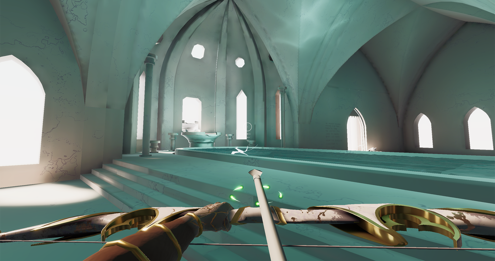
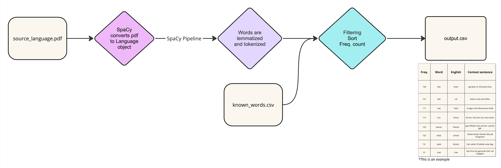
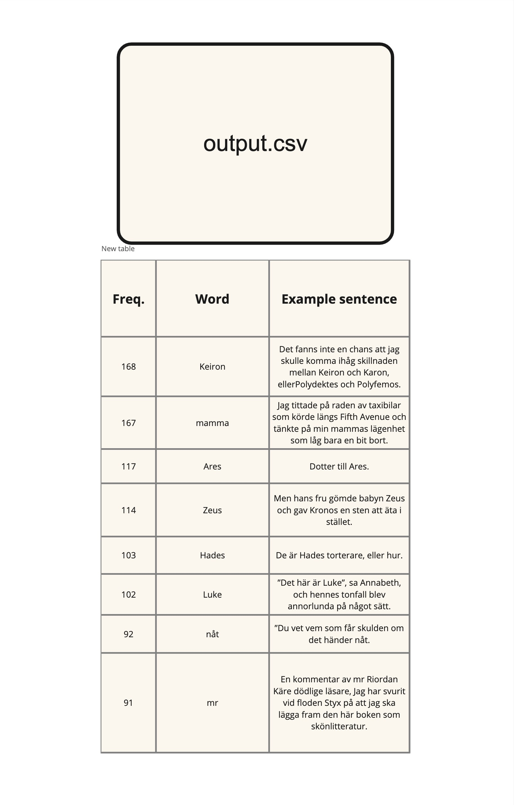
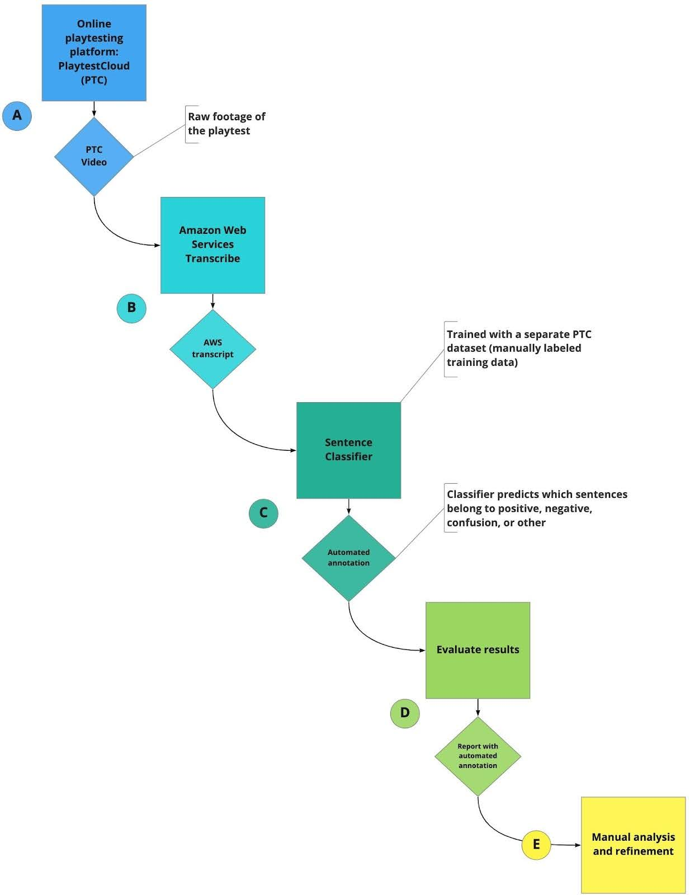
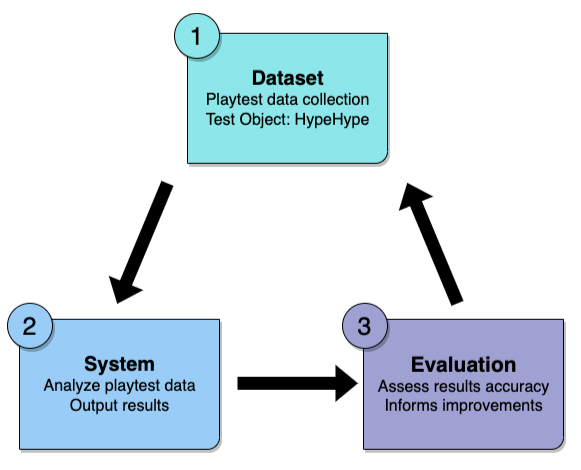

GAMES
Music Fairy Tales Oy
Employment | Finland | 2023
Feel & Play is a musical app for mobile that helps children develop emotional intellgence skills.
An inspiringly participatory app adventure that combines musicality, visuality and playfulness with multi-user collaboration.
Feel and Play was funded by Finland's Ministry of Education, in an effort to promote their goals of improved emotional intelligence in children.
My role:
As the lead developer of this Unity project, I guided a small team of developers to improve the quality and functionality of the existing codebase as well as add new features, such as painting.
Technology / Team / Time:
Developed with Unity and C#. Versions developed for Android mobiles, iPads and large multitouch screens. Available on App Store.
Marmortal
Game Design and Production MA | Aalto University, Finland | 2022
A FPS with fluid movement, wall-running and frantic race up a tower against the clock.
Runner up of the 2021 Bit1 game competition!
My role:
I was the audio programmer, using FMOD with Unity and C# to implement music and sound effect logic.
In addition to my role as audio programmer, I also conducted playtests as a user researcher and communicated findings with the development team.
Technology / Team / Time:
Developed in 7 months using Unity for PC. Team Size: 10.
A screenshot from Marmortal

Another screenshot from Marmortal
PROGRAMS AND SCRIPTS

Foreign Language Text Analyzer script
Personal project | 2024
A simple script that I wrote to help streamline the most time consuming part of learning a foreign language: processing new vocabularly.
SpaCy Natural Language Processing models are used to process and lemmitize words, which are then organized for export to flashcards.
My role:
After becoming interested in artificial intelligence during my Masters Thesis, I decided to continue exploring the potential of natural language processing.
The program takes a foreign-language PDF and processes the words, creating a frequency list accompanied with an example sentence of that word. A Google Translate plugin is then used to generate translations for each word. From there, the CSV file can be easily imported into Anki flashcards for memorization.
Technology / Team / Time:
This was a solo project, using SpaCy language models and Python.

An example of what the output CSV file would look like. In this form, it is very simple to import these new words as flashcards into Anki.

Masters Thesis Project
Game Design and Production MA | Aalto University, Finland | 2022
This program uses neural language models to automatically classify, label and highlight areas of interest to the games user researcher.
In brief, remote playtesting usually requires the manual review of tens of hours of footage, and we wanted to expedite that process.
Transcripts were generated from playtest videos, which were then analyzed by a sentence classifier trained with manually labelled data and the classified results (in the form of video timestamps) are then passed to the user researcher, sorted by sentiment and intensity.
My role:
Wrote parts the code, ran the study to compare the software against a manual approach.
Technology / Team / Time:
Developed using Python and Hugging Face language models, while I was working at HypeHype mobile game company as a Player Analyst.
Developed for my masters thesis, it was designed to improve the user research process at HypeHype. Compared in a study against a manual approach, and was shown to greatly increase the speed of insight-collection, allowing a larger turnover of user tests.

The development process of the automation system

PlaytestCloud playtesting service with HypeHype app